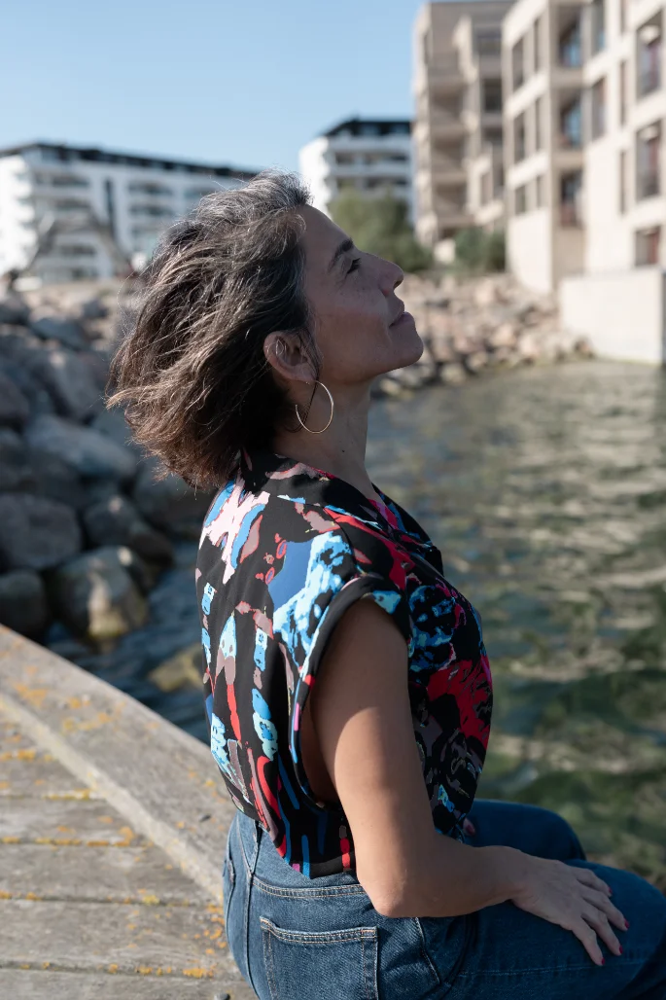

ALMAVIVA
Foco.
Un patrón concreto. Un proceso profundo. Un cambio real.
Un proceso de coaching neurológico individual para trabajar en profundidad un patrón que ya identificaste y quieres transformar.
Comprensión neurocientífica + práctica somática + acompañamiento personalizado.

Lo que cambia cuando entrenas tu patrón
No se trata solo de entender lo que te pasa. Se trata de entrenar una respuesta nueva.
Claridad sobre tu patrón
Identificas qué lo activa, cómo aparece en tu cuerpo, qué emoción despierta, qué pensamiento lo sostiene y cómo terminas reaccionando.
Comprensión neurocientífica
Entiendes cómo funciona ese mecanismo en tu sistema nervioso y qué has estado entrenando sin darte cuenta cada vez que reaccionas igual.
Regulación corporal
Aprendes prácticas somáticas para intervenir en tiempo real: respiración, movimiento, anclajes corporales y diálogo interno.
Cambio incorporado
Construyes nuevas respuestas, recursos y recordatorios para sostener el cambio en tu vida real, incluso cuando el patrón viejo intenta volver.
Hay una diferencia entre mirar un patrón y entrenarlo.
Tal vez ya sabes qué te pasa. Lo has pensado, hablado y analizado. Quizás lo has mirado en terapia, en sesiones de coaching o en conversaciones profundas contigo misme.
Pero cuando el disparador aparece… reaccionas igual.
Ese patrón no vive solo en tu mente. Vive también en tu cuerpo, en tu sistema nervioso y en la forma en que reaccionas antes de poder pensar.
¿Por qué sigues reaccionando igual?
Porque cada vez que el patrón se activa, tu sistema nervioso repite un circuito entrenado durante años.
No se desarma solo con información.
Se transforma con entrenamiento.
ALMAVIVA Foco existe para eso.
¿Qué es ALMAVIVA Foco?
ALMAVIVA Foco es un proceso de coaching neurológico individual, diseñado para trabajar en profundidad sobre un patrón concreto que quieres transformar.
Combina la comprensión neurocientífica de tu patrón específico con práctica somática en vivo. Miramos cómo opera en tu mente, en tu cuerpo, en tus emociones y en tus reacciones cotidianas.
No es una sesión suelta donde miras lo que te pasa. No es un programa de transformación completa. Es trabajo enfocado, personalizado y sostenido sobre aquello que hoy te limita, te agota o te bloquea.
El objetivo no es darte más teoría. Es ayudarte a entrenar una respuesta nueva, posible y sostenible.
Esa es la arquitectura del proceso. No teoría sin cuerpo. No práctica sin entendimiento. No técnicas sin acompañamiento humano real.
10 sesiones con progresión lógica
Cada sesión tiene un propósito dentro del proceso. No son conversaciones sueltas: son pasos de entrenamiento con dirección.
Mapeo
Vemos el patrón completo antes de entrenarlo.
Identificamos el patrón, creencia o situación concreta que necesitas transformar. Mapeamos cómo opera en tu cuerpo, tu diálogo interno, tus emociones y tus comportamientos. Trazamos el circuito: gatillador, sensación, emoción, pensamiento y reacción. Definimos el foco con precisión, no con generalidades.
Comprensión
La neurociencia de tu patrón específico.
Entiendes por qué ese patrón existe y qué lo sostiene neurológicamente. No es teoría abstracta: es la explicación exacta de cómo funciona esto en ti. Identificas qué estás entrenando sin saberlo cada vez que reaccionas igual.
Entrenamiento
El cambio se hace en el cuerpo, no solo en la mente.
Practicas herramientas somáticas personalizadas para tu patrón. Regulación del sistema nervioso en tiempo real dentro de la sesión. Respiración consciente, movimiento, anclajes corporales y diálogo interno. Cada sesión deja una herramienta que practicas antes de la siguiente.
Consolidación
Sostener el cambio cuando el cerebro quiere volver a lo viejo.
Trabajamos resistencias y retrocesos. Construimos tu sistema personal de sostén: prácticas, recordatorios y anclajes. Entrenamos la respuesta ante los momentos donde el patrón viejo intenta recuperar control. La consolidación neurológica requiere práctica sostenida; aquí diseñamos la tuya.
Integración y cierre
El final del proceso y el inicio de tu autonomía.
Revisamos el recorrido completo: qué cambió, qué se consolidó y qué sigue entrenando. Defines tu práctica autónoma para sostener el cambio sin acompañamiento constante. Evaluamos juntes si el proceso está completo o si quieres continuar con el Intensivo. Sales con un sistema personal que no depende de la motivación.
Qué incluye el proceso
10 sesiones individuales en vivo
45 minutos cada una, con progresión lógica y propósito claro.
Todas las sesiones grabadas
Con acceso permanente para revisar cuando lo necesites.
WhatsApp directo durante todo el proceso
No estás sole entre sesiones.
Prácticas somáticas personalizadas
Diseñadas para tu patrón específico, no genéricas.
Materiales de práctica descargables
Guías, ejercicios y audios de regulación somática.
Ajustes continuos según tu proceso
Lo que tu cuerpo necesita en la semana 7 no es lo mismo que en la 2.
Sesión de descubrimiento gratuita previa
Para definir el foco y resolver todas tus dudas.
¿Para quién es este proceso?
Es para ti si…
No es para ti si…
Este proceso es íntimo, práctico y honesto. No promete cambiarlo todo de golpe. Promete trabajar con precisión sobre un foco real y entrenarlo con consciencia.
¿Sesiones Individuales, Foco o Intensivo?
Los tres son acompañamientos 1:1. La diferencia está en el momento en que estás y en lo que necesitas ahora.
Un espacio flexible para mirar lo que estás viviendo, ganar perspectiva y reconectar contigo. Sin progresión predefinida. Para cuando necesitas detenerte, ordenar y comprender.
10 sesiones con progresión lógica para trabajar un patrón concreto. Comprensión neurocientífica + práctica somática + acompañamiento sostenido. Para cuando ya sabes qué quieres transformar y estás liste para entrenarlo.
Un proceso más amplio y completo para trabajar cómo funcionas en general, no solo un patrón aislado. Incluye método, sesiones educativas, coaching somático y formación profunda.
¿Cómo saber cuál necesitas?
No hay un camino mejor que otro. Hay un camino más adecuado para ti, ahora.
ALMAVIVA Foco y terapia
ALMAVIVA Foco es neuroeducación + neuroentrenamiento. No es terapia.
Sí trabaja con
No trabaja con
En la sesión de descubrimiento evaluamos juntes si ALMAVIVA Foco es lo que necesitas ahora. Tu bienestar es lo primero.
Este proceso no reemplaza un tratamiento médico, psicológico o psicoterapéutico cuando corresponde.
Tu compromiso con el proceso
Incluye todo el proceso
Todo lo descrito, sin costos adicionales.
Si tu situación económica no te permite acceder y realmente quieres hacerlo, puedes escribirme para revisar opciones de pago.
Sesión de descubrimiento gratuita
Una conversación de 30 a 45 minutos que es parte del proceso, no una llamada de venta.
Exploramos tu situación actual
Qué quieres transformar y cómo opera ese patrón en tu vida.
Definimos el foco del proceso
Con precisión, no con generalidades.
Evaluamos si es lo que necesitas ahora
O si habría algo más adecuado para tu momento.
Resolvemos tus dudas
Sobre el proceso, la metodología y el acompañamiento.
No necesitas tener todo claro para dar el primer paso. Solo necesitas querer mirarlo.
Convicción fundadora